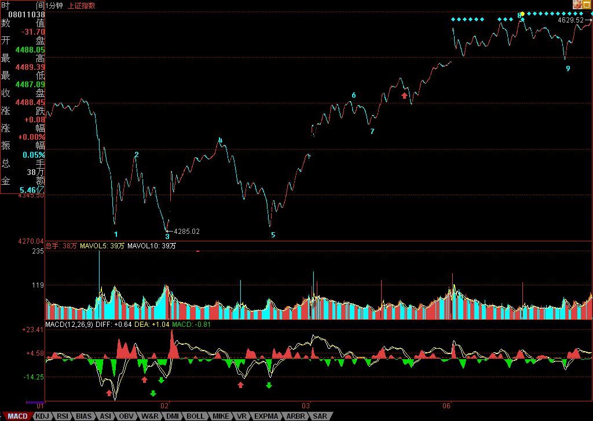

正如这次在3600点突击时，本ID写了满江红，上次突破3000点的总攻行情，本ID在3月19日写了神州自有中天日，万国衣冠舞九韶，
时间上，回头一看，都是很是时间的。在3月19日那篇文章里，本ID宣称“在总市值超越GDP之前谈论股市的泡沫是可笑的，在中国股市总市值超越其GDP之前，第一阶段行情不会结束。”现在，这个目标已经达到，中国股市的总市值已经达到GDP了。本ID在文章里很明确指出，第一阶段“行情最主要体现在以权重股为代表的成分股上。” 但，今天这样一个日子里，本ID必须宣布，成分股行情的泡沫化阶段正式开始。
GDP，就是整个股市市值波动的中枢，前面是恢复性上涨，恢复到这个中枢上来。而从今天开始，将是远离该中枢的泡沫化阶段。一般来说，泡沫化阶段的行情，将逐步走向全面疯狂，大笨象们都可以跳出小步舞，疯狂的上涨将如瘟疫般蔓延。这个阶段，可以很短暂、也可以延续相当时间。可以远离中枢30%，也可以远离300%，但最后的结果都是唯一的，回跌到中枢处。
所有如本ID般正在轿子上享受的，首先要在思想上明确这波行情的性质，但不用慌张，能在泡沫中安心享受，在泡沫最后一刻一脚把泡沫踢破，本来就是投机的好境界，好好享受，好好利用，别浪费了疯狂轿夫们的力气。
一般在这种泡沫化阶段，本ID的原则就是只坐轿子不动手。本ID握有大量中字头的大盘股票，基本每一个中字带头的成分股票都有，这在3600点的时候，本ID专门说过的，等这泡沫化打到高潮时，这些都是很好的踢破泡沫的种子好选择。其他就是原来的那十几、二十只成本为0的，这是作为所谓的二、三线股配置的。这些股票，反而有些会长线继续关注，因为第二阶段的成长股行情中，有些会成为种子选手。本ID的仓位都是按20年的思路来建的，对有些股票，本ID绝对要搞他20年以上。
短线走势，看看下图就很明白，8-9形成的线段，和下面6-7的形成线段上类上涨走势，当然，这个走势可以延续下去，直到形成新的1分钟中枢，但前提是后面的上攻不形成类背驰，否则，将至少在目前位置形成一个1分钟级别的中枢震荡。是否背驰，就是明后两天关注的重点。一旦背驰形成，那么一个大的震荡不可避免。
个股方面，成分股的冲锋依然会继续，但二、三线股的行情将逐步加温。今天最大的问题就是，周末第三波人的宣传能力太差，确实是乌合之众，其他方面资源太少，使得被忽悠的第四波人的进入还没达到应有的程度，因此，这几天第三拨人如何在忽悠方面表演，可以继续看戏。如果第四拨人的进入速度太慢，那么大盘必然要背驰而震荡。目前外围股市腥风血雨，如果这两天能止，一定是第三、四拨人最大的利好，那就等着吧。
思考题：看这线段中的类背驰，是用1分钟图上的MACD还是5分钟图上的MACD辅助判断方便？
本ID原想着以下大雨的名义而偷懒不去腐败，结果，去腐败的那区竟然没下雨，而本ID这区的雨也小了，看来没机会，只能先下，再见了。
